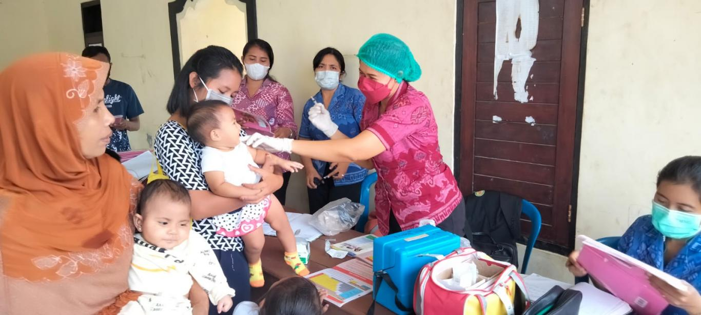
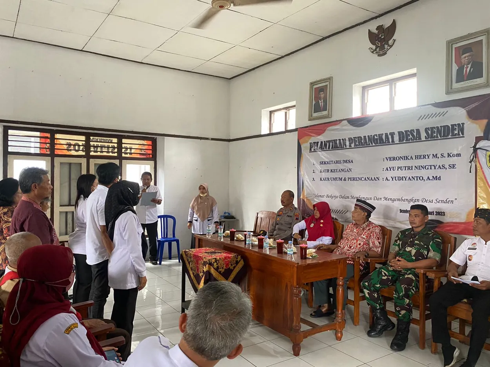
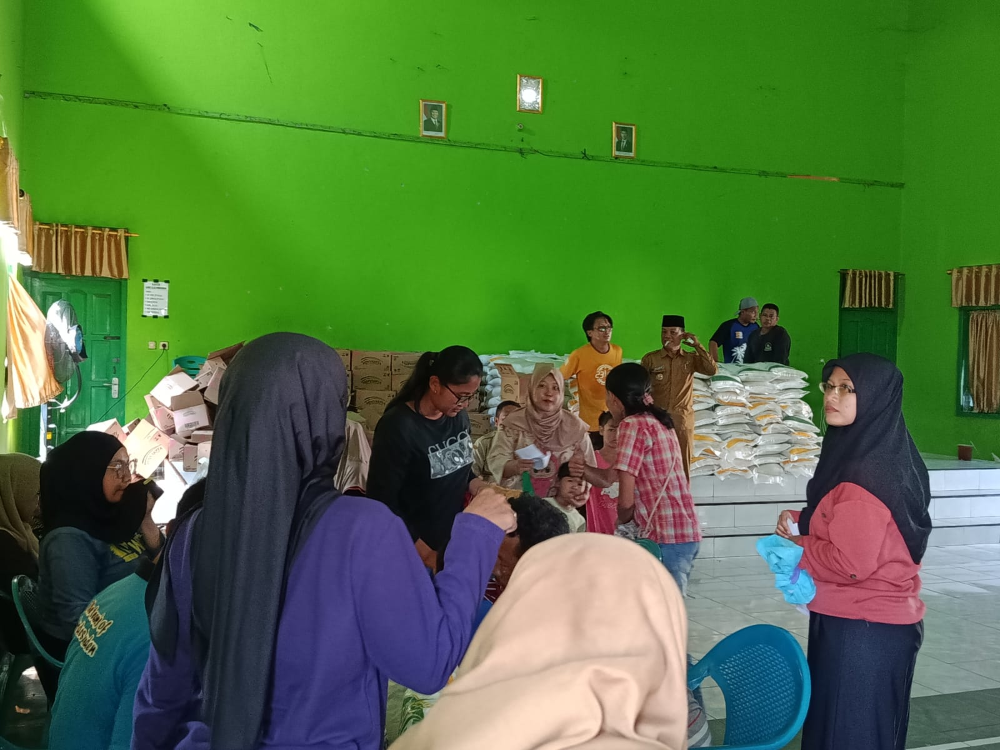

Galeri Kegiatan
Dokumentasi berbagai kegiatan dan momen berharga masyarakat Desa Senden

Gotong Royong
Kegiatan bersih-bersih lingkungan desa yang rutin dilakukan setiap bulan oleh warga Desa Senden.

Posyandu Balita
Pelayanan kesehatan rutin untuk balita dan ibu hamil di Balai Desa Senden.

Pemilihan Lurah
Dalam rangka memilihan lurah baru bagi Desa Senden, semua warga antusias untuk memilih pilihannya.

Penyaluran Bapang
Selasa tanggal 14 April 2026 bertempat di Gor Kalimosodo Desa Senden telah disalurkan Bantuan Pangan periode Februati - Maret 2026 kepada sejumlah 454 KPM ( Keluarga Peneriman Manfaat).